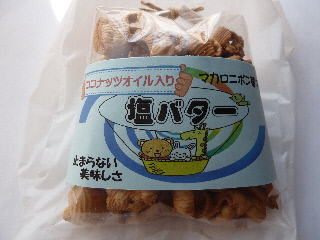
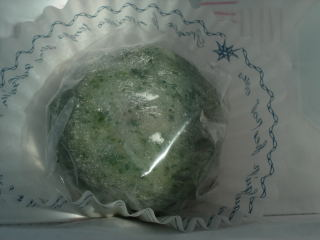
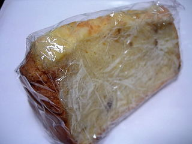
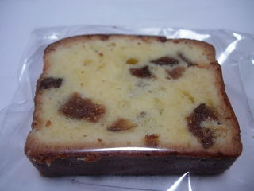

島根県出雲市多伎町多岐17-1
閉店しました。
更新日 : 2015/08/01

流行のココナッツオイル入りです。ほんのりココナッツの味もありますが、基本は塩バターのシンプルな味でした。
塩分控えめかな。なんとなくヘルシー。
コンガリ焼けたマカロニの、素朴な感じの味がしました。
「止まらない美味しさ」って書いてありますが、食べ物は好き嫌いがあるので、こうゆうのは書かない方がいいかなって思いました。
更新日 : 2010/05/16
いちじくの若葉大福です。

イチジクの若葉の入ったお餅の中には、餡子とイチジクの佃煮が入っていました。
とっても甘いんですが、イチジクの味がしっかりあって美味しかったです。
更新日 : 2009/9/18
いちじく館で販売していたシフォンケーキです。ラップで包んであるのがホームメイドな感じで、なんとなく安全安心な気分になりますね。

ふんわりとしたケーキで、押したら戻って来るくらい弾力がありました。スポンジみたいです。
ふわふわの食感がいいですね。いちじくは少なめなので、シフォンケーキの味が損なわれてなく美味しかったです。

いちじくパウンドケーキも売ってました。
【おいしいものを食べよう。】【たくさん寝よう。】
【ソロ活をしよう!】【季節感のあることをしよう。】【動画視聴はほどほどに。】【当サイトの全てのコンテンツは無断転載禁止です。】